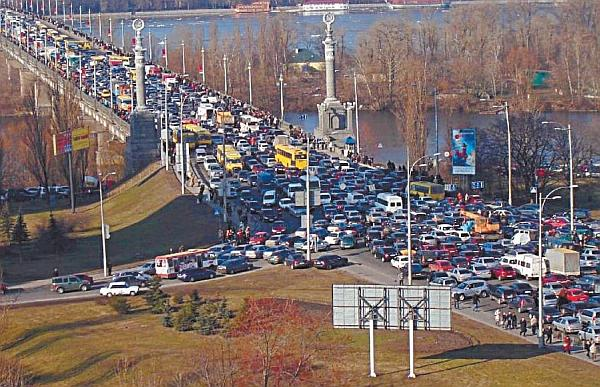
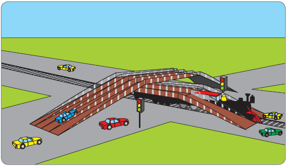

Как не попасть в пробку и что делать, если вы все же в нее попали.
Каждый водитель всеми правдами и неправдами старается избегать попадания в автомобильные пробки, но все равно периодически в них попадает. Трудно найти занятие, которое раздражало бы людей больше, чем стояние в пробках (рис. 3.9). Кто-то опаздывает на деловую встречу, кто-то – к врачу, кому-то нужно срочно забрать ребенка из детского сада, и осознание собственного бессилия способно вывести из себя кого угодно. Как же избежать попадания в автомобильную пробку и что делать, если вы в нее угодили?
ПРИМЕЧАНИЕ
В большинстве крупных российских городов прослеживается следующая закономерность: в утренние часы пробки обычно возникают в направлениях, ведущих к центру города, а в вечерние часы – в направлениях, ведущих в спальные районы. Это объясняется просто: утром люди едут на работу из спальных районов в центр города, а вечером – массово возвращаются домой.
Если вы подозреваете, что на дороге, по которой вы движетесь, возможно наличие пробок, постарайтесь занять крайнюю правую или крайнюю левую полосу. Это нередко позволяет покинуть запруженную автомобилями дорогу и поехать по другому пути.
Если вы займете крайний правый ряд, то сможете при необходимости съехать на ближайшем повороте направо. Если это перекресток, поедете дальше другой дорогой. Возможно, она будет и длиннее, но зато свободна и без пробок. Другой вариант – объехать пробку через дворовые территории. Правда, Правила дорожного движения запрещают сквозное движение в жилых зонах и на дворовых территориях, но иногда это нарушение является меньшим из зол.

Рис. 3.9. Автомобильные пробки – бич современных дорог
СОВЕТ
Чтобы не попадать в утренние и вечерние пробки, попросите свое руководство сместить вам рабочий график. Если вы будете работать, например, не с 8.00 до 17.00, а с 10.00 до 19.00, шанс попасть в утреннюю или вечернюю пробку у вас намного снижается. Правда, отметим, что к Москве это не относится, так как на многих магистралях и улицах пробки возникают с восходом солнца и «рассасываются» только ближе к ночи.
Из левой крайней полосы также можно свернуть в сторону, на другую дорогу либо в жилую зону или во двор. Кроме того, из левого ряда можно также развернуться и поехать в обратном направлении, чтобы поискать более подходящий путь. Иногда, чем стоять в пробке, по времени бывает выгоднее вернуться к началу пути и поехать совершенно другой дорогой, правда, при условии, что в обратном направлении дорога свободна.
Однако предложенные способы имеют свои недостатки. Перед перестроением в правый ряд не стоит забывать, что, во-первых, по нему движется общественный транспорт (а это существенно замедляет движение, особенно если остановки расположены не в специальных «карманах», а непосредственно возле проезжей части), а во-вторых – если кто-то заглохнет, то свой автомобиль в соответствии с Правилами дорожного движения он постарается переместить именно в крайний правый ряд, тем самым перегородив движение по нему. Кроме того, всегда может найтись «умник», который припаркуется в правом ряду даже при наличии запрещающих знаков. Не стоит забывать и о том, что далеко не все дворы и жилые зоны имеют сквозной проезд, который позволит объехать пробку.
Движение по крайнему левому ряду также чревато малоприятными неожиданностями. Например, на ближайшем перекрестке может оказаться, что из этого ряда разрешается только поворот налево, в то время как вам нужно ехать прямо. Или движение разрешено прямо и налево, но перед вами стоит масса автомобилей, которые планируют повернуть налево и пропускают встречный транспорт, и вы вынуждены ждать своей очереди проехать прямо. Перестраиваясь в левый ряд для последующего разворота в случае пробки, помните, что в любом месте на дороге может начаться разделительная полоса с зеленым газоном и высоким бордюром, что не позволит вам осуществить запланированный маневр.
Перед тем как отправиться в поездку, подумайте, где на пути следования вам могут попасться автомобильные пробки, и заранее определите пути объезда (рис. 3.10). Кстати, во многих российских городах информацию о наличии на дорогах пробок регулярно передают по местному FM-радио. Кроме того, информацию о пробках можно найти в Интернете.

Рис. 3.10. Многоуровневые развязки – эффективное средство борьбы с пробками
Если вы все же попали в пробку, главное – не теряйте самообладания и постарайтесь держать себя в руках (хотя это едва ли не самое сложное, что можно придумать в данной ситуации). Подумайте о делах, которые вы можете решить прямо сейчас.
Например, при наличии карманного компьютера вполне возможно проверить электронную почту и даже ответить на самые срочные письма. Многие вопросы решаемы по мобильному телефону. О последних событиях на работе вам вполне может рассказать секретарь, и через него же вы можете отдать самые необходимые и срочные распоряжения. Если срочно необходима ваша подпись на документах, а вы застряли неподалеку от станции метрополитена, вероятно, что эти документы прямо к месту вашей «дислокации» подвезет курьер на метро.
СОВЕТ
Многие наши соотечественники, чтобы избежать пробок, добираются до места назначения следующим образом: едут до ближайшей станции метро на машине, там оставляют ее на стоянке и спускаются в «подземку». Возможно, крупному руководящему работнику такой способ передвижения и не очень понравится, но, по крайней мере, он избавляет человека от необходимости часами стоять в пробках.
Некоторые водители, попав в большую автомобильную пробку, совмещают «приятное с полезным»: читают книгу или слушают аудиокнигу, занимаются планированием своих дел, изучают иностранный язык.
Находясь в пробке, следите за тем, как движутся автомобили в соседних с вами рядах. Однако не стоит сразу же перестраиваться, едва увидев, что соседняя машина проехала на пару метров дальше, чем вы. Понаблюдайте за движением соседнего ряда в течение какого-то времени (хотя бы 5–10 минут), и только если вы действительно видите, что автомобили движутся по нему значительно быстрее вас, принимайте решение о перестроении.